Fitness 胸
1 胸上肌
1.1 上斜卧推
建议上斜卧推动作放在平板卧推之前
如果先做平板杠铃卧推，做完平板杠铃卧推之后，已经没有力气做上斜卧推了，这个时候做上斜卧推，上的重量会非常的小，重量太小，效果自然不会太好，所以，将上斜卧推放在第一个动作
推荐机器: 史密斯机
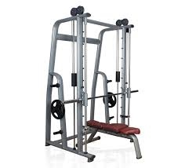
示意图片:
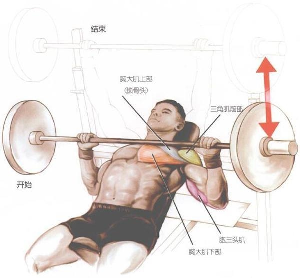
注意事项:
- 仰卧于上倾斜 30-40度 的训练椅上，正手握杆，双手距离比肩宽一点
- 杠铃下落时吸气，杠铃上推是呼气
- 杠铃下落的时候，最终要降落到锁骨的位置
- 向上推举杠铃，直到手臂伸直，但关节不要锁死
2 胸中肌
2.1 杠铃平板卧推
推荐机器: 史密斯机
示意图片:
注意事项:
- 向上推的时候呼气，向下落的时候吸气
手腕保持中立位
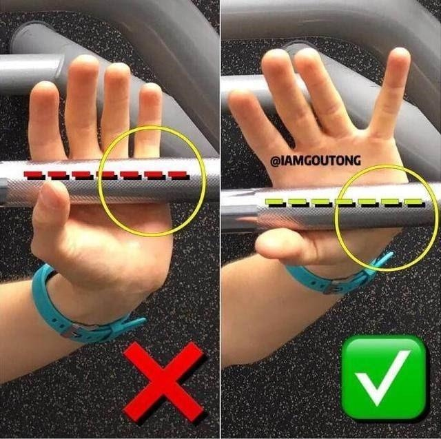收紧肩胛骨、收腹挺胸、臀部不要挺起(当我们举起杠铃时，一定要沉肩，收紧肩胛，感受胸肌的发力，避免肩胛骨前引造成圆肩。具体做法是，卧推时上背部紧贴卧推凳，在整个过程中保持肩胛收紧不放松，而且，将杠铃推到顶端时肩膀也需要在锁定位置，不要向前耸)
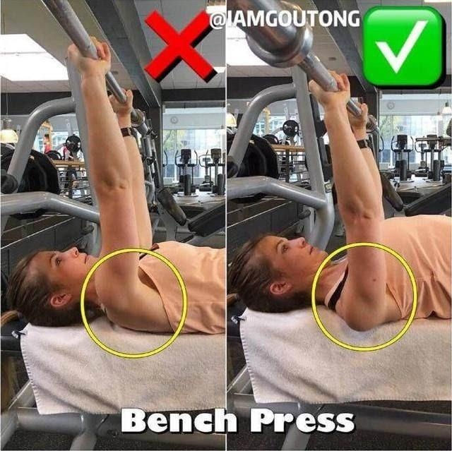手肘略低于胸，杠铃下落的位置在乳头位置，上推至肘关节微屈即可
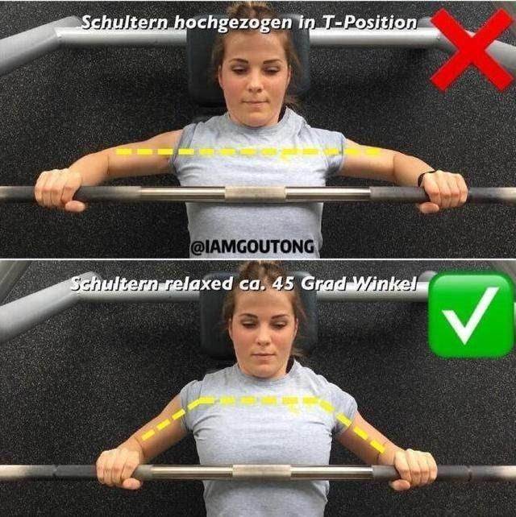脊椎保持正常生理弯曲(收紧核心，腰背部不要完全贴实板凳，至少保证能塞进一只手的空间)
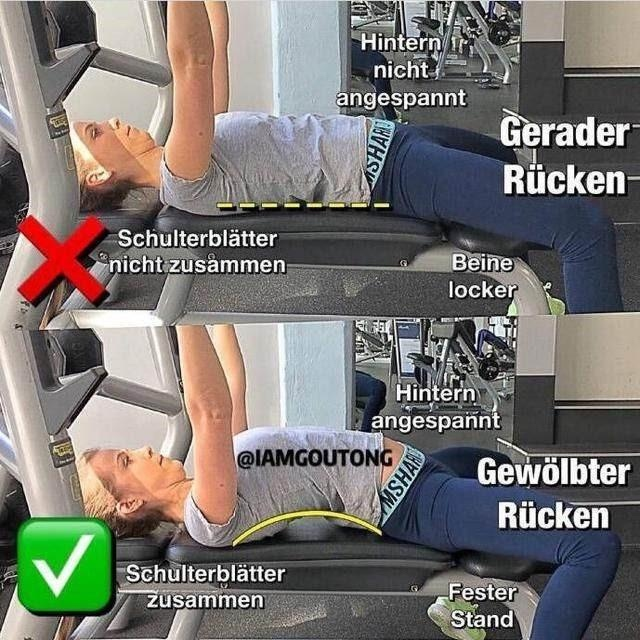
3 胸下肌
3.1 下斜卧推
示意图片:
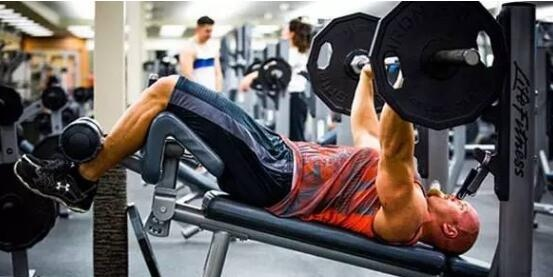
注意事项:
- 仰卧的斜板的角度控制在15-30度之间，角度太大不易控制，也锻炼不到胸大肌，哑铃的轴线位于胸肌下部
- 注意哑铃或杠铃下放到最下面的肋骨两侧，不要放到胸大肌中间部位，以免给肩关节造成压力
- 勾脚和斜板要安全、牢固，上推时肱三头肌不要主动用力
3.2 双杠臂屈伸
示意图片:
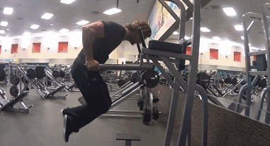
注意事项:
身体前倾，低头含胸，抬高臀部和大腿，动作中保持这个姿势
要选择宽握，手肘向外打开
下落幅度要大一点，到了最低点后利用胸肌的力量，撑起来，不要将意念集中在你的手臂上
在最低点的时候上臂要低于手肘
4 胸肌外延
4.1 哑铃飞鸟
示意图片:
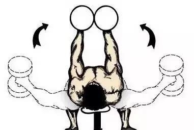
注意事项:
- 准备动作：仰卧窄凳（宽20～25厘米）上，双手持铃，掌心相对。上背部紧贴凳子，脊椎保持生理弯曲，核心收紧！
- 下放：下放哑铃时注意力集中在胸缝处，靠胸肌的张力控制住哑铃缓慢下放，同时充分吸气、挺胸，幅度要完全到位。
- 收缩：上举时要靠胸肌的收缩带动双臂向上环抱，直至哑铃相触，这样可避免肩背 过分参与用力。
- 意念集中：注意集中在胸部肌肉，感觉胸肌被拉扯和收缩，为了使动作更加准确，可想像去抱一课大柱子，做此动作时不断在心里念着“抱住它！抱住它！”
5 胸中缝
这个动作通常用来收尾
5.1 龙门架夹胸
龙门架绳索夹胸，可以从各个角度，来强化我们的胸肌中缝线，是锻炼胸肌中缝非常经典的一个动作
推荐机器: 龙门架
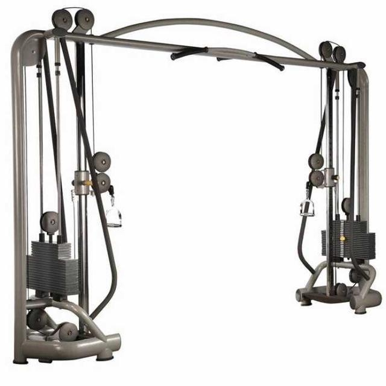
示意图片:
高位绳索夹胸，主要是练下胸中缝(绳索在最高处，训练的时候双手是向着身体下方动作，主要是刺激到下胸肌中锋)
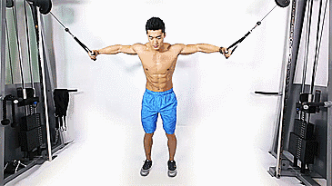平行绳索夹胸，主要是练中胸中缝(绳索与肩同高，双臂动作的时候是和地面平行，练的是中胸中缝)
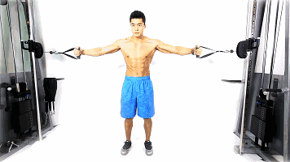低位绳索夹胸，主要是练上胸中缝(绳索在底端，动作的时候双手是抓着拉环往上抬起，练的是上胸中缝)
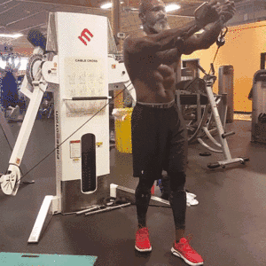
注意事项:
- 采用弓步，一脚在前一脚在后，身体向前倾斜45度，微微屈膝，双手张开各握住一个拉环，肩胛骨往后夹，不要耸肩。(注意，你的肘关节要保持相对固定，不要乱晃)
- 微微屈肘，身躯保持不动，双手掌相对抓住拉环，胸部发力，双手臂向身前伸展(注意，这个动作叫龙门架绳索夹胸，顾名思义，是“夹胸”，不是推胸，也不是夹手臂)(很多人做龙门架夹胸这个动作的时候，要么做成夹手，要么做成绳索推胸，这样对胸肌中缝的刺激都会大大减弱的)
- 在顶点的时候停顿片刻，让胸肌顶峰收缩，然后控制好缓缓回复，重复上述动作
- 如果龙门架前方有镜子，通过镜子是好好观察自己的动作，看你动作的时候左右胸肌是否有挤压在一起，使得胸口出现缝隙
5.2 蝴蝶机夹胸
示意图片:
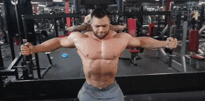
注意事项:
设定好重量，蝴蝶机夹胸不要用大重量，这是练胸肌中缝的，并不是练手臂和斜方肌的
调整好凳子高度，端正坐于凳上，手握把手，肘微微弯曲，沉肩挺胸
注意力完全集中于胸肌中缝，双手握把夹胸，然后缓慢回复，回复的时候动作不要太快，要控制好，并让胸部肌肉充分伸展